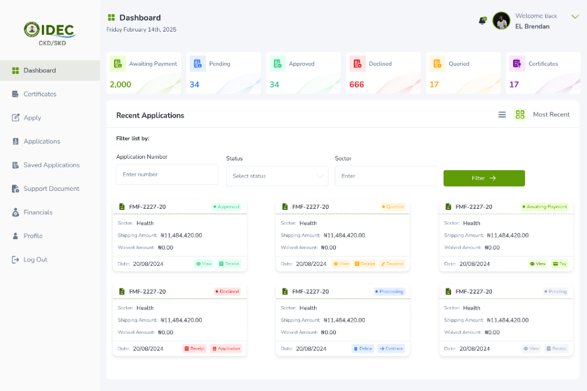
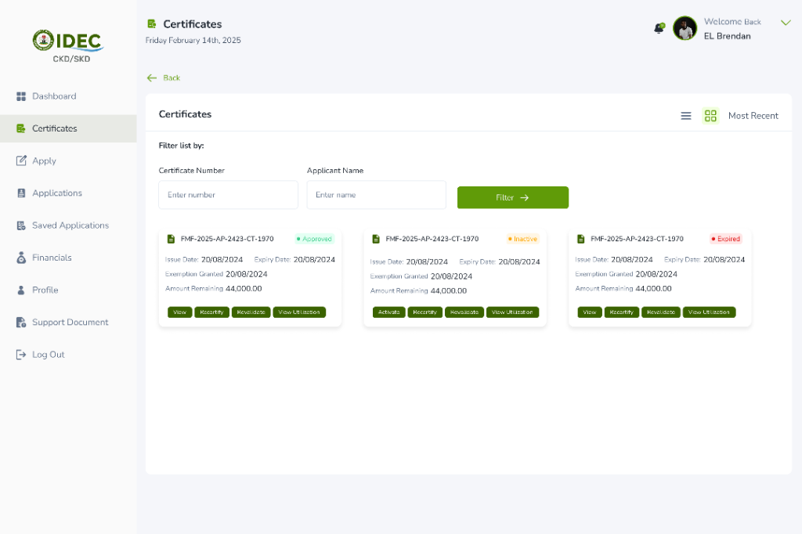
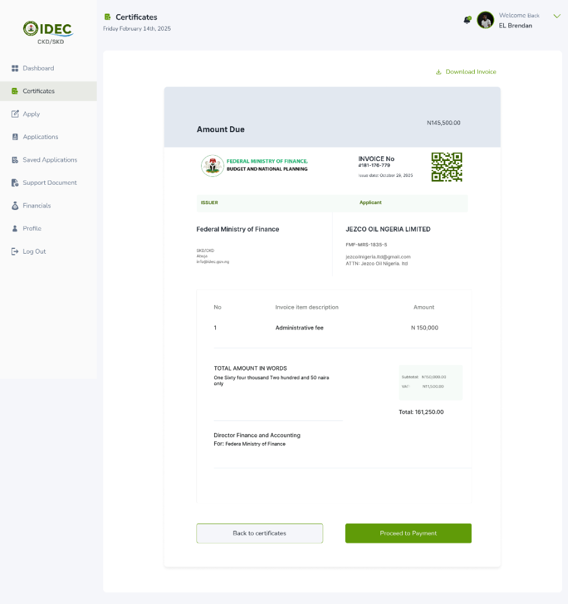
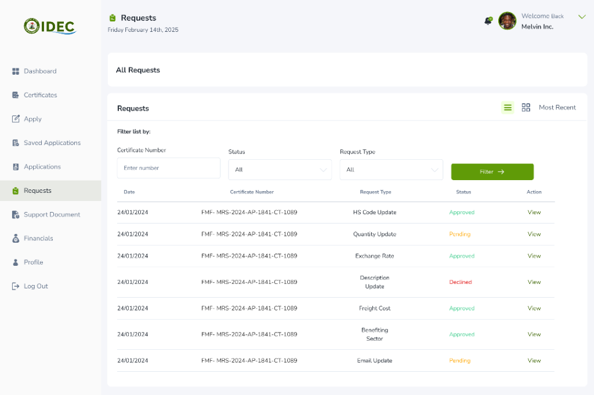
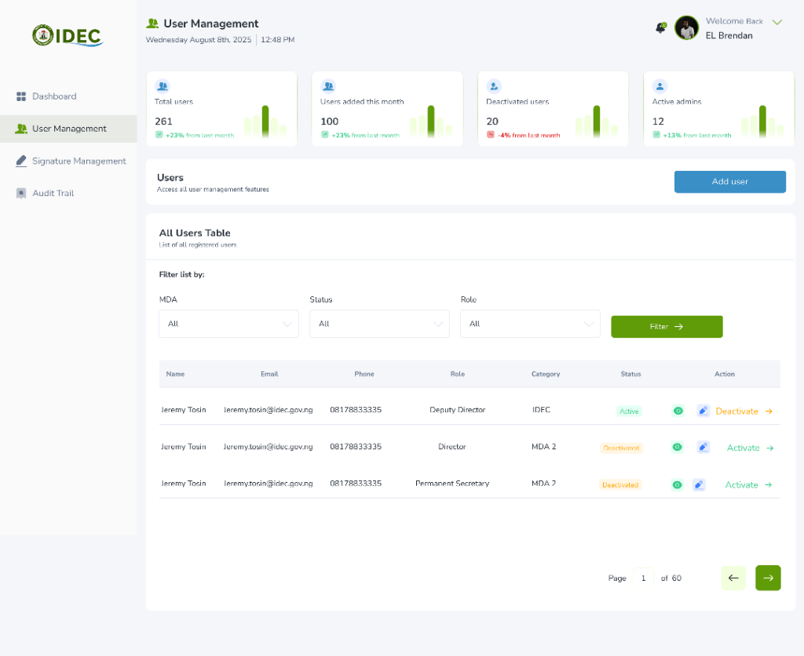
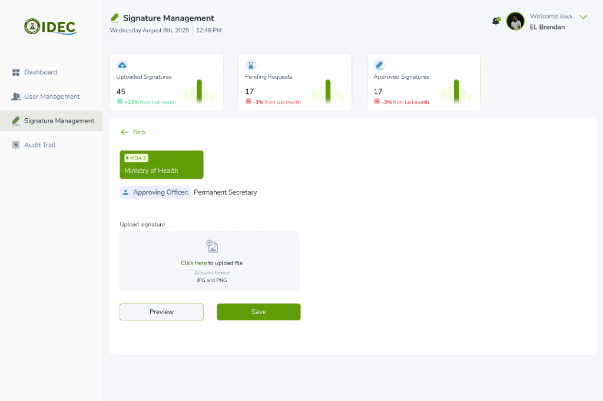
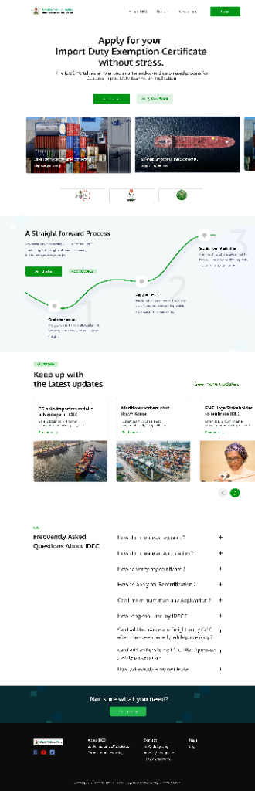

National Trade Automation Umbrella Platform • Federal Ministry of Finance
Visit Live Site (idec.gov.ng) ↗
The IDEC platform is an umbrella software solution that automates the trade systems of Nigeria in its entirety. Overseeing international commerce and duty exemption frameworks for the Federal Ministry of Finance, Nigeria Customs Service, and inter-agency MDAs, the ecosystem coordinates hundreds of billions in annual capital investments, CKD/SKD assembly lines, healthcare imports, and industrial machinery.
As Lead UI/UX Designer at Outsource Global (May 2022 – December 2025), Emmanuel was tasked with architecting this vast, multi-stakeholder ecosystem spanning over 1,500+ production screens. The challenge demanded a unified design language that could handle complex regulatory workflows: enforcing strict compliance verification, providing applicants with real-time SLA tracking, equipping customs officers with cryptographic QR validation, and establishing tamper-proof inter-agency digital audit trails.
The result is a unified umbrella platform that eliminates paperwork backlogs, automates tariff calculations, and brings radical transparency and speed to Nigeria's entire cross-border trade infrastructure.
Managing international trade concessions across automotive assembly lines (CKD/SKD), healthcare imports, and industrial equipment historically involved multi-ministry physical paperwork, leading to severe port congestion and revenue loss.
Hardcopy physical files were hand-carried across 6 separate ministries, departments, and agencies (MDAs) before reaching final ministerial sign-off, creating severe logistical black holes.
Importers racked up millions in daily shipping container detention fines while waiting for paper exemption letters to clear customs, driving inflation and threatening local assembly plants.
Counterfeit paper waiver letters and manipulated commercial invoices were presented at maritime seaports, causing hundreds of billions in uncollected statutory duties.
Architecting an umbrella solution for Nigeria's cross-border trade required managing over 1,500 interactive screen states across diverse user roles from corporate applicants to customs comptrollers.
To understand the root causes of multi-month trade bottlenecks, we conducted immersive field audits across Tin Can Island and Apapa Seaports, customs valuation commands, and the Federal Ministry of Finance.
Architected to serve corporate supply chain directors navigating strict import timelines alongside customs comptrollers enforcing fiscal compliance.
“My assembly plant relies on 500+ containerized CKD vehicle components landing every month. If our duty exemption letter stalls for 3 days, our entire factory halts.”
“My duty is to protect national revenue and ensure only authorized concessions pass. I need instant line-item verification between commercial invoices and gazetted tariff policies.”
We re-engineered the legacy paper-based process into a streamlined 5-phase digital continuum spanning corporate accreditation, itemized tariff classification, parallel inter-agency review, ministerial digital seal, and seaport customs release.
Importer registers corporate entity, uploads corporate tax clearance (TCC), and verifies statutory manufacturing credentials via FIRS API.
Applicant inputs bill of lading, container manifest, and itemized HS codes; smart engine computes duty waiver and assesses concession eligibility.
Application enters parallel review queues across Ministry of Finance, Customs, and relevant line ministries with automated 48-hr SLA timers.
Honourable Minister executes digital PKI signature; system issues an authenticated digital certificate embedded with tamper-proof QR code.
Customs border officers query certificate via QR or single-window API, matching physical containers and releasing cargo in under 3 minutes.
A unified taxonomy bridging public fiscal guidelines, commercial applicant workspaces, inter-agency review desks, ministerial sign-offs, and seaport border terminals.
Public-facing trade portal providing regulatory clarity, statutory guidelines, and self-service eligibility checking.
High-velocity portal for manufacturing conglomerates, automotive assemblers, and licensed importers.
Concurrent multi-agency workspace harmonizing Ministry of Finance and Customs valuation audits.
Executive decision-making suite for the Honourable Minister of Finance and permanent secretaries.
Point-of-clearance verification terminal connecting maritime port gates and single-window borders.
Delivering an umbrella system capable of handling Nigeria's entire import concession regime demanded robust architectural decisions to eliminate fraud, reduce latency, and standardize high-density data.
To maintain total visual and functional consistency across 1,500+ interactive screen states across 6 ministries, we established a strict atomic design system. We defined uniform tokens for tabular data grids, contextual action menus, status pill badges, and nested verification drawers, reducing component maintenance overhead and ensuring zero discrepancy between ministerial and applicant views.
To eradicate the 38% clerical error rate that stalled applications at customs desks, we engineered an intelligent multi-step application wizard. The engine auto-completes 10-digit Harmonized System codes, verifies concession quota eligibility, computes CIF duty exemptions in real time, and flags restricted line items before applications enter the review queue.
Instead of linear paper queues where files took 60+ days moving across physical offices, we architected a parallel inter-agency workflow engine. Finance, Customs, and Sector Ministries review files simultaneously in a split-screen viewport comparing uploaded commercial invoices with gazetted quotas, governed by automated 48-hour SLA escalation countdowns.
To completely eliminate paper waiver forgery and seaport demurrage penalties, we implemented hardware-backed PKI digital signatures for the Honourable Minister. Approved concessions generate a tamper-proof digital certificate with an encrypted 2D QR vector, enabling seaport border officers to verify authenticity and release cargo in under 3 minutes.
High-level operational cockpit displaying registered user volumes (+23% MoM), monthly onboarding trajectories, system top-action breakdowns, and granular MDA user status filtering.

Applicant overview dashboard tracking requests across 6 distinct lifecycle states (Awaiting Payment, Pending, Approved, Declined, Queried, Certificates) with contextual action triggers.

Dedicated certificate records console featuring real-time status indicators (Approved, Inactive, Expired), remaining waiver amounts, and direct actions for recertification, revalidation, and utilization.

Automated Ministry billing invoice featuring embedded verification QR codes, itemized administrative fee calculations, VAT breakdown, and direct payment clearance for applicants.

Live request processing log with multi-parameter filtering by certificate number, status indicators (Approved, Pending, Declined), and granular classification by request type.

Enterprise user administration supporting government MDA tiering, multi-level roles (Deputy Director, Director, Permanent Secretary), and quick account activation switches.

Cryptographic signature upload portal allowing authorized approving officers (e.g., Permanent Secretaries) to attach verified credentials for tamper-proof certificate issuance.

Comprehensive citizen-facing landing page featuring clear value propositions, interactive 3-step application path, recent customs policy updates, and categorized FAQ accordions.
By dismantling paper barriers and establishing a synchronized multi-agency digital corridor, IDEC eliminated multi-billion Naira fraud, slashed demurrage penalties, and restored investor confidence in Nigerian manufacturing.
"Emmanuel Brendan redesigned our main landing page and within two weeks we were seeing more qualified enquiries"
"Working with Emmanuel was a game changer. The conversion rate on our supplement store went up 40% in the first month."
"The attention to detail and strategic thinking Emmanuel brings to every project is unmatched. Our sign-up rate doubled."
Tell me about your business and what's not working I'll tell you if and how I can help.
I reply within 24 hours. If your project is urgent, use the Book a Call button to find a time directly.